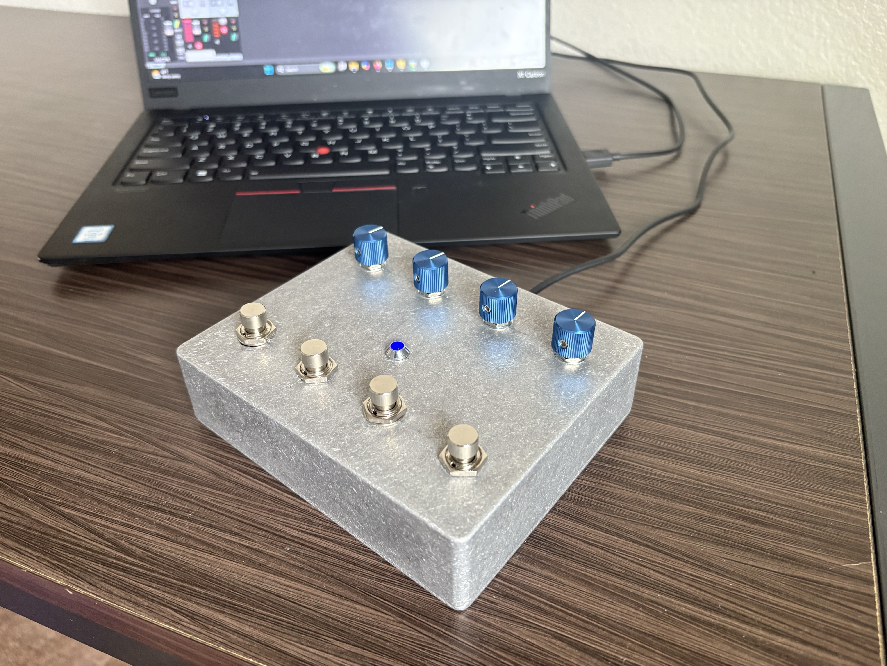
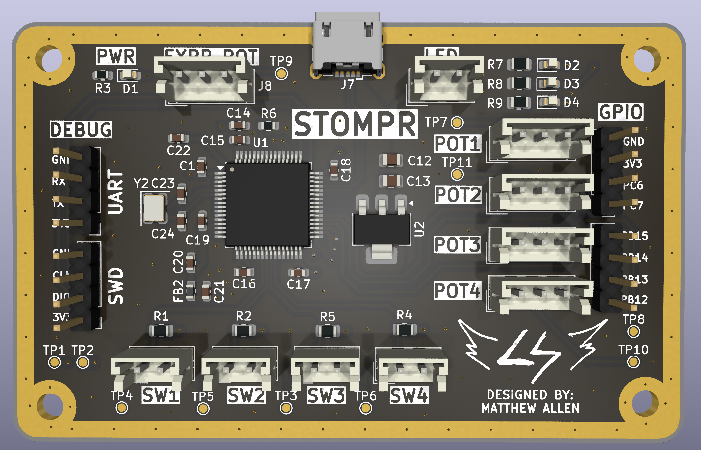
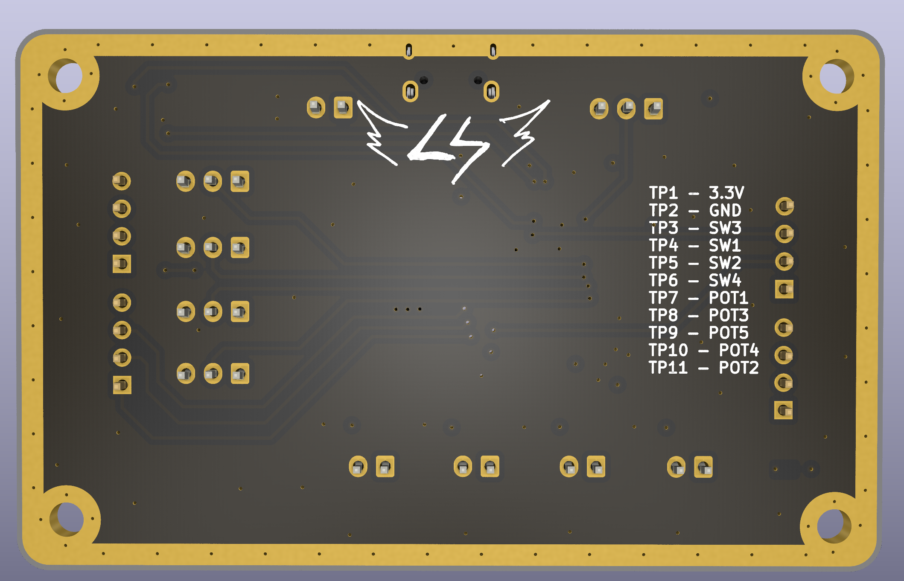
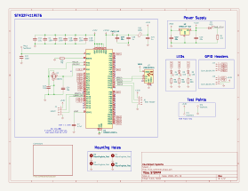
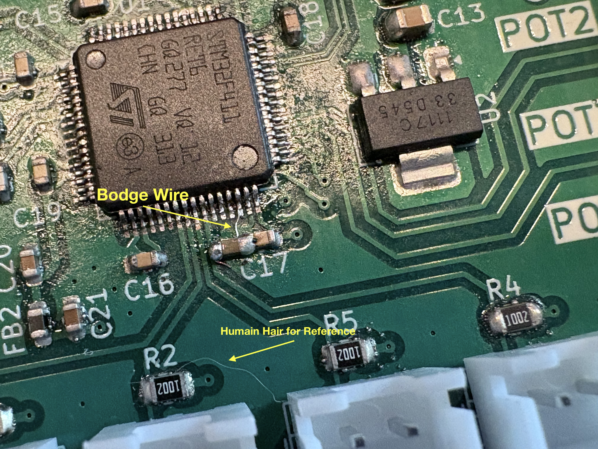
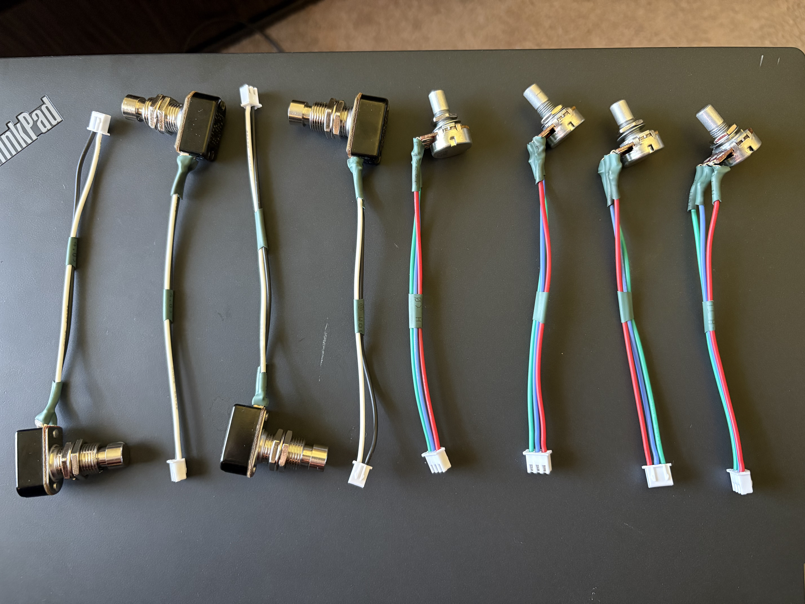

STOMPR
FOOTSWITCH MIDI CONTROLLER
Other than powerdercoating and some painting, this project is finished! Definitely my favorite project I've done so far, and I'm really happy with how everything came together. This project encompassed a lot of different skills and techniques, spanning from circuit design all the way to 3D printing and (soon) powerdercoating. If anyone is interested in buying one of these, I might consider doing a small batch run, so please reach out! It's not the most feature rich MIDI controller out there, but it's incredibly solid and reliable.

STOMPR acts as a MIDI controller to send commands to a DAW such as Reaper. Not only is this a great learning platform, but it lets you control parameters for plugins and effects such as: turning a digital effect on/off, controlling an expression pedal, etc.
It's fully USB MIDI-Class complaint, so it should work with any modern DAW or software that has native MIDI support. I've been using it primarily to control my Neural DSP Archetype Gojira plugin in Reaper, and it works flawlessly.
The project is broken into 3 parts:
- Electronics (PCB, switches, potentiometers, etc)
- Software (USB Driver, Firmware)
- Mechanical (Enclosure, knobs, mounting)
Code, PCB files, and CAD files are all available on GitHub:
https://github.com/mattallenn/STM32-MIDI-Controller
Electronics
PCB
The heart of the electronics is a 4-layer PCB I designed in KiCad.
The purpose of the board is to connect to the host computer via USB, and convert the switches and knob movements into MIDI commands that will be send the the host.
This is achieved using an STM32F411RET6 MCU. I chose this primarily because I have the Nucleo Devboard with the same MCU, so it allowed me to protoype without risk of running into an unexpected firmware bug and having to order a second board. Also, I wanted to practice designing an MCU-based PCB and implement everything myself on the STM32 software stack. Setting up a USB driver like this is much more involved than simply including a library in Arduino.

I definitely could have achieved this layout with a 2-layer board, but I wanted to practice with 4 layers. My stackup was SIG/GND - GND - PWR - SIG/GND. I've read online that SIG/GND - GND - GND - SIG/GND is slightly better for EMI reasons, but :shrug:. Either way, it doesn't matter for my uses here.
Also, I added a copper ring around the outside of the board. This really makes no difference afaik (I don't have edge plating), but it looks cool and I saw it in some other designs. There's quite a few things in this board that are likely sub-optimal for a production run, but I was having a lot of fun experimenting with techniques and trying new things.
I added some unnecessary feautures on this board such as programmable SMD LEDs and headers for unnused GPIO. This won't be accessible when inside of the enclosure, but I'm ordering 5 PCBs, so I can hopefully use the excess boards for different projects.

Schematic

The schematic consists of a few main sections: MCU, Power Supply, and some additional circuitry. The STM32 is powered by the 3.3V rail, which is stepped down from the USB's 5V using an AMS1117 regulator. There are decoupling capacitors placed on all of the VDD pins on the STM32.
The only major error I made on this design was forgetting to add the VCAP pin capacitor. This connects to the internal voltage regulator that is inside of the STM32. Without this capacitor, the board will never turn on. Unfortunately, I realized this mistake after the boards had already been sent to the fab, so I had to get a bit creative to fix it. (more on this later)
Truthfully, I'm not sure how I overlooked this. It's a critical part of the design, and clearly listed in the datasheet, application notes, and reference designs. Previous STM32 designs I have done used the STM32F103 chip, which is less powerful and does not have a VCAP pin at all. On the bright side, I will (hopefully) never make this mistake again!
VCAP Bodge
To fix the missing VCAP capacitor, I soldered a 4.7uF capacitor onto the board. I shared the ground with a nearby decoupling capacitor, and used tiny strand of wire to connect the VCAP pin to the positive end of the capacitor. It's not pretty by any means, but it works. This was a major pain to solder, but I was able to get it done with the help of a a lot of flux and patience.

Speaking of soldering, I'll admit that this PCB isn't super great. I didn't order a stencil, which made getting the LQFP chip soldered much more difficult. I applied the solder paste by hand, and the distribution was not very even. There's lot's of flux residue on the board, but I haven't bothered to clean it off since I'm scareed I'll break off the bodged VCAP wire.
Switches & Knobs
To stay flexible and keep the PCB size under 100x100mm (cheaper from the fab), I'm just soldering wires to the pots and switches, and using JST connectors on the PCB. One of the most relaxing parts of this project was soldering up all of the JST wires to the pots and switches. I wrapped everything in heat shrink and I think it looks quite clean.

I ordered the switches, pots, and a power LED from lovemyswitches.com. They've been super helpful and the prices were more than reasonable.
The specific components I got:
- Pots x4 (10k Ohm, Linear)
- Switches x4
- LED x1
Software
All of the software is written using STM's CubeMX for initial code generation (pinout, clock configuration, etc) and CubeIDE for writing, flashing, and debugging the C code.
The USB MIDI Driver is implemented using tinyUSB. I definitely recommend trying tinyUSB out if you're working on a similar project. There is some manual setup required, like creating the USB Descriptor and configuring a few settings.
Other than that, it's pretty straightforward. The switches are mapped to GPIO input pins, and the pots are mapped to ADC pins. Based on their values and a bit of state logic, CC (control change) and PC (program change) MIDI messages are sent to the host device.
To create the MIDI packets, I'm using a struct based on the USB MIDI specification.
Currently, I have the knobs mapped to send CC messages, and the switches are split between CC and PC messages. In the specific plugin I'm using (Neural DSP Archetype Gojira), the CC messages used to control things such as gain, volume, turning an effect on/off, etc. The PC (program change) messages are used to switch between presets.
// Maps adc channel to cc num static const uint8_t adc_cc_nums[NUM_ADC_CHANNELS] = { ADC0_CC_NUM, ADC1_CC_NUM, ADC2_CC_NUM, ADC3_CC_NUM }; for (int i = 0; i < NUM_ADC_CHANNELS; i++) { uint8_t cc_val = (uint8_t)(((uint32_t)adc_buf[i] * 127) / 4095); // Box filter: only send if change exceeds threshold. int delta = (int)cc_val - (int)last_adc_cc[i]; if (delta < 0) delta = -delta; if (delta > ADC_CC_THRESHOLD) { last_adc_cc[i] = cc_val; MIDI_SendCC(adc_cc_nums[i], cc_val); } }
This code scales scales down the 12-bit ADC value to the 7-bit CC range, and only sends a MIDI message if the change exceeds an adjustable threshold. This prevents the MIDI channel from constantly spamming messages when noise or minor fluctions occur on the ADC readings.
Resources & References
Without the help of YouTube University and a bunch of online resources, there's no way I would have been able to figure this out! Here are some of the resource I used during this project:
- Phil's Lab Series of STM32 USB Tutorials
- Phil's Lab STM32 Design Videos
- tinyUSB Documentation
- STM32F411 Datasheet
- STM32F411 Application Note
- STM32F411 Reference Design
- STM32 Nucleo Schematic
- STM32 "BlackPill" Schematic